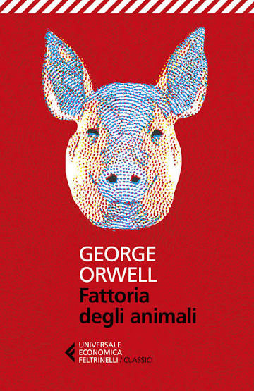

Stanchi dello sfruttamento del padrone, gli animali della Fattoria degli Animali si ribellano e cacciano gli uomini, dando vita a un proprio governo fondato sull'uguaglianza tra tutti gli abitanti della fattoria. Ma con il passare del tempo, chi detiene il potere comincia lentamente a riscrivere le regole a proprio vantaggio. Sotto forma di favola, Orwell costruisce un'allegoria tagliente sui meccanismi della rivoluzione e su come gli ideali più puri possano essere corrotti da chi li dovrebbe difendere.
Fin dalle prime pagine sono stata catturata dalla lettura, e andando avanti mi sono resa conto sempre di più di quanto questo racconto sia attuale e adatto a tutte le età. All'inizio mi chiedevo: "libro dagli 8 anni? Come può un bambino di quell'età leggere un'opera di tale importanza e comprenderla davvero?" Poi ho capito che è proprio questo il punto: persone di età diverse colgono cose diverse in questo racconto, traendone insegnamenti e paragoni differenti a seconda di chi lo legge.
È stato bellissimo il modo in cui mi ha fatto riflettere sul fatto che l'uomo è il vero problema, sulla manipolazione assurda messa in atto da chi detiene il potere. Penso che non guarderò più i maiali allo stesso modo — l'uomo, in verità, già lo guardavo con un certo sospetto.
Un momento del libro in particolare mi ha addolorata profondamente, legato a uno dei personaggi che si dedica anima e corpo al lavoro per il bene della fattoria — senza dire di più, per non rovinare la sorpresa a chi non l'ha ancora letto, ma è stato uno dei punti più ingiusti e dolorosi di tutta la storia.
Insegnamenti ottimi in ogni pagina, ma è la pagina finale del libro ad essere stata davvero clamorosa e pugnalante: mi ha lasciata con un senso di shock e un vuoto interiore difficile da scrollarsi di dosso. Anche questo libro mi sono sentita in dovere di prestarlo e consigliarlo — anzi, questa volta la lettura non è nemmeno opzionale.
"Ecco, compagni, la risposta ai nostri problemi. È riassunta in una sola parola: Uomo. L'Uomo è l'unico nostro vero nemico. Liberiamoci dell'Uomo e la causa principe della fame e del troppo lavoro sarà estirpata per sempre. L'Uomo è l'unica creatura che consuma senza produrre. Non produce latte, non depone uova, è troppo debole per tirare l'aratro, non sa correre abbastanza veloce da riuscire a catturare un coniglio. Eppure domina su tutti gli animali."
"Non vi è chiaro allora, compagni, come mai tutti i mali di questa vita provengano dalla tirannia dell'umano? Liberiamoci dell'uomo e il prodotto delle nostre fatiche ci apparterrà. "
"E ricordate, compagni, la vostra determinazione non deve vacillare. Nessun'argomentazione deve distogliervi dall'obiettivo."
"L'uomo non serve gli interessi di alcuna creatura eccetto se stesso."
"Le creature di fuori guardavano dal maiale all'uomo e dall'uomo al maiale e ancora dal maiale all'uomo, ma già era loro impossibile distinguere fra i due."